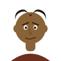

Gn 30:1-6; 49:16-17
Quinto filho de Jacob, nascido de Bila, serva de Raquel — dado à luz "sobre os joelhos" de Raquel, que assim o considera seu, segundo o costume da época.
A família de Deus inclui quem nasce em circunstâncias imperfeitas ou incomuns.
"Dan julgará o seu povo" — Gn 49:16
Uma das doze tribos de Israel, apesar de nascer de forma pouco convencional.
Filho de Jacob e de Bila, serva de Raquel. Irmão de Neftali (também filho de Bila).
Uma mulher sem filhos dar a sua serva ao marido para gerar herdeiros "em seu nome" era uma prática documentada noutros textos legais do Próximo Oriente Antigo, não uma invenção da narrativa bíblica.